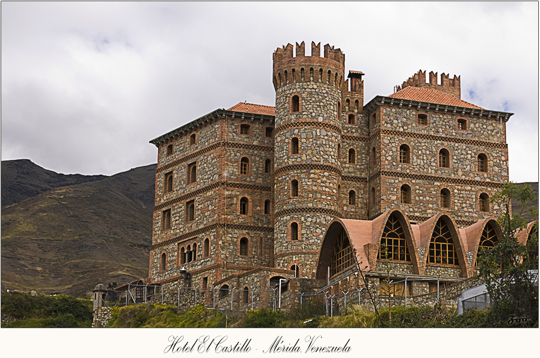

El Observatorio Astronómico Nacional de Llano del Hato1 comúnmente referido como Astrofísico de Mérida es un observatorio astronómico ubicado en los predios de la población de Apartaderos del estado Mérida en Venezuela a una altura de 3.600 msnm convirtiéndolo en uno de los observatorios enclavados a mayor altura del mundo. El observatorio es administrado por el Centro de Investigaciones de Astronomía quien es además, el ente encargado de realizar los estudios en el mismo. |

Según se conoce, el precursor original de El Castillo de San Ignacio fue el empresario Ignacio Castrogiovanni, quien según la historia dice que desde que era un niño soñaba con tener un castillo propio, así que puso en marcha lo que fue su sueño de la niñez, una vez que tenía las posibilidades económicas, sin embargo, no fue sino hasta el año 1990 que por manos de Lidio Piva se finalizó la construcción de la obra. |

El Hotel La Trucha Azul fue construido con un elegante estilo colonial, en armonía con los paisajes andinos, con características muy especiales, considerando todos los factores que la rodean como el clima, la topografía, el ambiente y la cultura. |
La Venezuela de Antier es el único parque temático dedicado a Venezuela. Fue creado por el merideño Alexis Montilla, quien en esta ocasión quiso revivir, ya no un pueblo andino de los años 30, sino todo un país